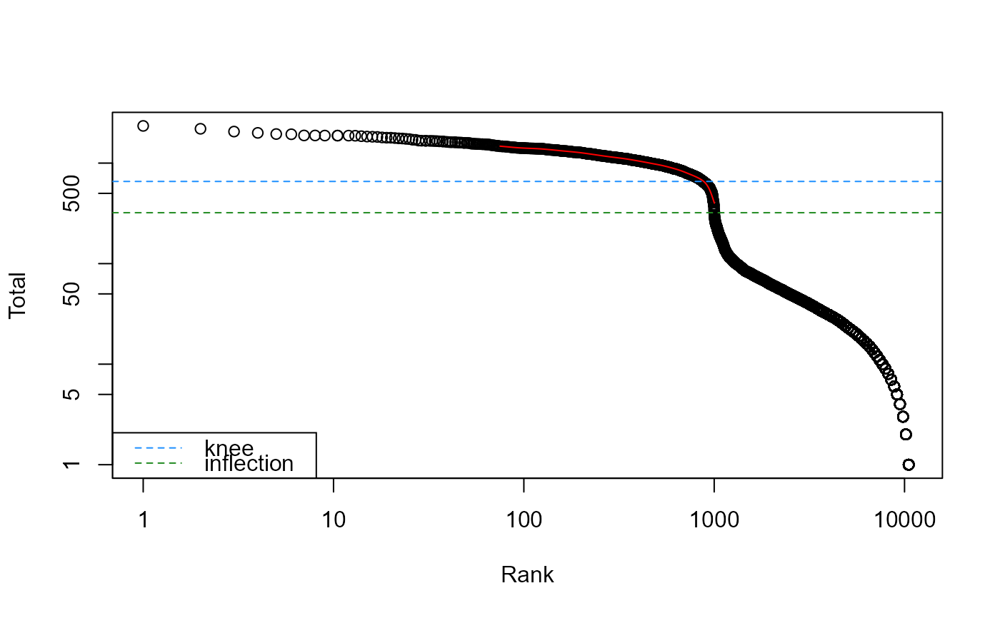

barcodeRanks.RdCompute barcode rank statistics and identify the knee and inflection points on the total count curve.
barcodeRanks(m, ...) # S4 method for ANY barcodeRanks( m, lower = 100, fit.bounds = NULL, exclude.from = 50, df = 20, ..., BPPARAM = SerialParam() ) # S4 method for SummarizedExperiment barcodeRanks(m, ..., assay.type = "counts")
| m | A numeric matrix-like object containing UMI counts, where columns represent barcoded droplets and rows represent genes. Alternatively, a SummarizedExperiment containing such a matrix. |
|---|---|
| ... | For the generic, further arguments to pass to individual methods. For the SummarizedExperiment method, further arguments to pass to the ANY method. For the ANY method, further arguments to pass to |
| lower | A numeric scalar specifying the lower bound on the total UMI count, at or below which all barcodes are assumed to correspond to empty droplets. |
| fit.bounds | A numeric vector of length 2, specifying the lower and upper bounds on the total UMI count from which to obtain a section of the curve for spline fitting. |
| exclude.from | An integer scalar specifying the number of highest ranking barcodes to exclude from spline fitting.
Ignored if |
| df | Integer scalar specifying the number of degrees of freedom, to pass to |
| BPPARAM | A BiocParallelParam object specifying how parallelization should be performed. |
| assay.type | Integer or string specifying the assay containing the count matrix. |
A DataFrame where each row corresponds to a column of m, and containing the following fields:
rank:Numeric, the rank of each barcode (averaged across ties).
total:Numeric, the total counts for each barcode.
fitted:Numeric, the fitted value from the spline for each barcode.
This is NA for points with x outside of fit.bounds.
The metadata contains knee, a numeric scalar containing the total count at the knee point;
and inflection, a numeric scalar containing the total count at the inflection point.
Analyses of droplet-based scRNA-seq data often show a plot of the log-total count against the log-rank of each barcode
where the highest ranks have the largest totals.
This is equivalent to a transposed empirical cumulative density plot with log-transformed axes,
which focuses on the barcodes with the largest counts.
To help create this plot, the barcodeRanks function will compute these ranks for all barcodes in m.
Barcodes with the same total count receive the same average rank to avoid problems with discrete runs of the same total.
The function will also identify the inflection and knee points on the curve for downstream use, Both of these points correspond to a sharp transition between two components of the total count distribution, presumably reflecting the difference between empty droplets with little RNA and cell-containing droplets with much more RNA.
The inflection point is computed as the point on the rank/total curve where the first derivative is minimized.
The derivative is computed directly from all points on the curve with total counts greater than lower.
This avoids issues with erratic behaviour of the curve at lower totals.
The knee point is defined as the point on the curve where the signed curvature is minimized.
This requires calculation of the second derivative, which is much more sensitive to noise in the curve.
To overcome this, a smooth spline is fitted to the log-total counts against the log-rank using smooth.spline.
Derivatives are then calculated from the fitted spline using predict.
We supply a relatively low default setting of df to avoid overfitting the spline,
as this results in unstability in the higher derivatives (and thus the curvature).
df and other arguments to smooth.spline can be tuned
if the estimated knee point is not at an appropriate location.
We also restrict the fit to lie within the bounds defined by fit.bounds to focus on the region containing the knee point.
This allows us to obtain an accurate fit with low df rather than attempting to model the entire curve.
If fit.bounds is not specified, the lower bound is automatically set to the inflection point
as this should lie below the knee point on typical curves.
The upper bound is set to the point at which the first derivative is closest to zero,
i.e., the “plateau” region before the knee point.
The first exclude.from barcodes with the highest totals are ignored in this process
to avoid spuriously large numerical derivatives from unstable parts of the curve with low point density.
Note that only points with total counts above lower will be considered for curve fitting,
regardless of how fit.bounds is defined.
emptyDrops, where this function is used.
Aaron Lun
# Mocking up some data: set.seed(2000) my.counts <- DropletUtils:::simCounts() # Computing barcode rank statistics: br.out <- barcodeRanks(my.counts) names(br.out)#> [1] "rank" "total" "fitted"#> Warning: 400 y values <= 0 omitted from logarithmic plot